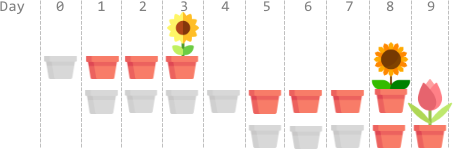
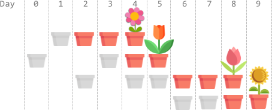

| Category | Difficulty | Likes | Dislikes |
|---|---|---|---|
| Algorithms | Hard | 1658 | 85 |
visa
You have n flower seeds. Every seed must be planted first before it can begin to grow, then bloom. Planting a seed takes time and so does the growth of a seed. You are given two 0-indexed integer arrays plantTime and growTime, of length n each:
plantTime[i] is the number of full days it takes you to plant the ith seed. Every day, you can work on planting exactly one seed. You do not have to work on planting the same seed on consecutive days, but the planting of a seed is not complete until you have worked plantTime[i] days on planting it in total.growTime[i] is the number of full days it takes the ith seed to grow after being completely planted. After the last day of its growth, the flower blooms and stays bloomed forever.From the beginning of day 0, you can plant the seeds in any order.
Return the earliest possible day where all seeds are blooming.
Example 1:

Input: plantTime = [1,4,3], growTime = [2,3,1]
Output: 9
Explanation: The grayed out pots represent planting days, colored pots represent growing days, and the flower represents the day it blooms.
One optimal way is:
On day 0, plant the 0th seed. The seed grows for 2 full days and blooms on day 3.
On days 1, 2, 3, and 4, plant the 1st seed. The seed grows for 3 full days and blooms on day 8.
On days 5, 6, and 7, plant the 2nd seed. The seed grows for 1 full day and blooms on day 9.
Thus, on day 9, all the seeds are blooming.Example 2:

Input: plantTime = [1,2,3,2], growTime = [2,1,2,1]
Output: 9
Explanation: The grayed out pots represent planting days, colored pots represent growing days, and the flower represents the day it blooms.
One optimal way is:
On day 1, plant the 0th seed. The seed grows for 2 full days and blooms on day 4.
On days 0 and 3, plant the 1st seed. The seed grows for 1 full day and blooms on day 5.
On days 2, 4, and 5, plant the 2nd seed. The seed grows for 2 full days and blooms on day 8.
On days 6 and 7, plant the 3rd seed. The seed grows for 1 full day and blooms on day 9.
Thus, on day 9, all the seeds are blooming.Example 3:
Input: plantTime = [1], growTime = [1]
Output: 2
Explanation: On day 0, plant the 0th seed. The seed grows for 1 full day and blooms on day 2.
Thus, on day 2, all the seeds are blooming.
Constraints:
n == plantTime.length == growTime.length1 <= n <= 1051 <= plantTime[i], growTime[i] <= 104